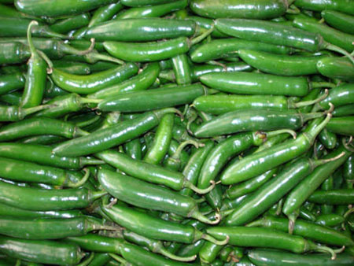
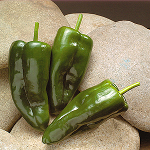
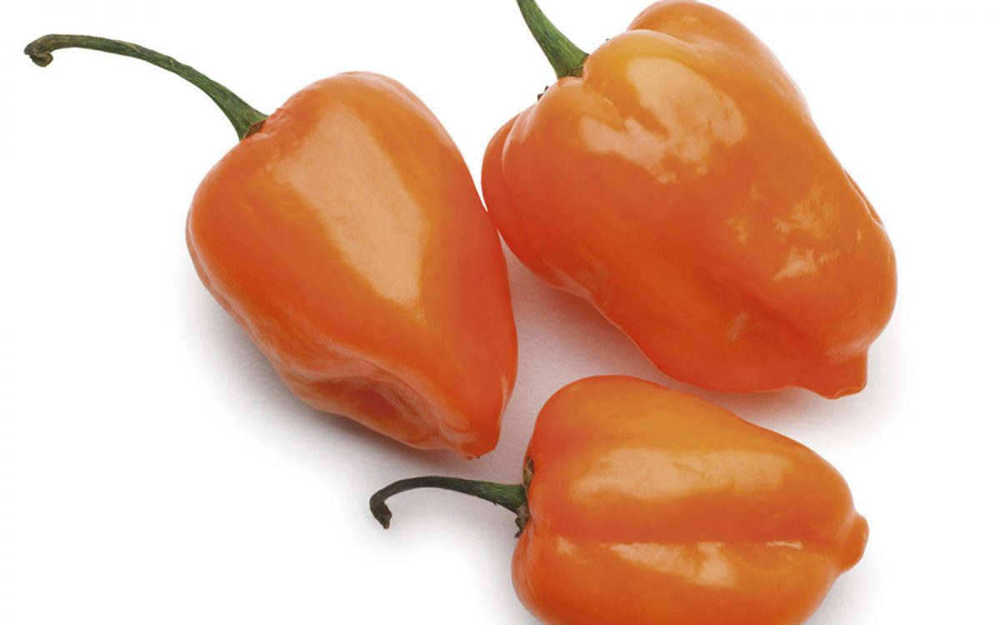

CHILE JALAPEÑO
 Chile fresco, color verde o verde oscuro, de forma cónica alargada, a veces terminan en puntiagudo o chato, es carnoso con piel brillante. Mide en promedio unos 6 cm de largo y 2.5 cm de ancho. Se considera picoso o muy picoso.
El nombre de Chile Jalapeño es el más usado en todo el país, se le da este nombre porque se dice que antiguamente se cultivaba en Jalapa, Veracruz desde donde se comercializaba a otras partes, actualmente ya no se cultiva ahí, pero es un Chile muy famoso y utilizado en la Gastronomía Veracruzana. En la Capital también se le llama Chile Cuaresmeño porque antiguamente sólo lo llevaban durante la época de cuaresma, era un Chile especial para rellenar con queso o con atún.
Chile fresco, color verde o verde oscuro, de forma cónica alargada, a veces terminan en puntiagudo o chato, es carnoso con piel brillante. Mide en promedio unos 6 cm de largo y 2.5 cm de ancho. Se considera picoso o muy picoso.
El nombre de Chile Jalapeño es el más usado en todo el país, se le da este nombre porque se dice que antiguamente se cultivaba en Jalapa, Veracruz desde donde se comercializaba a otras partes, actualmente ya no se cultiva ahí, pero es un Chile muy famoso y utilizado en la Gastronomía Veracruzana. En la Capital también se le llama Chile Cuaresmeño porque antiguamente sólo lo llevaban durante la época de cuaresma, era un Chile especial para rellenar con queso o con atún.
CHILE SERRANO

Es un chile pequeño de color verde de forma cilíndrica, a veces su terminación es en punta, en promedio mide de 3 a 5 cm de largo y un centímetro de diámetro, se considera picoso, generalmente se ocupa por sus semillas y venas, también muy picosas. Su cáscara es tersa y brillante, nunca opaca o arrugada, la gran mayoría de este Chile se consume inmaduro, es decir, de color verde, y al madurar torna rojo y se utiliza de la misma manera.
Se conserva fácilmente en el refrigerador por más de 10 días, no se debe de congelar. Toma su nombre de su lugar de cultivo que son las sierras de los estados de Puebla, Hidalgo y México, serrano es el nombre más conocido en todo el país, aunque también es llamado Chile verde, cabe advertir que cuando las recetas no especifican o solo dicen Chile verde se trata del Chile Serrano.
CHILE POBLANO

Es fresco, carnoso, de tamaño grande, de forma cónica aplanada con algunas ondulaciones, generalmente verde oscuro con piel brillante, aunque algunas variedades pueden ser más claras. No se considera exactamente picoso, tiene sabor definido, en ocasiones puede ser picoso.
El Poblano de primera mide en promedio unos 12 cm y 6 cm en su parte más ancha. Es el Chile más utilizado en todo el país y del que más hectáreas se siembra. Este Chile es muy utilizado en las cocinas de los estados del centro del país.
Entero es el favorito para rellenar, con el se hace famoso el Chile relleno y los Chiles en Nogada, entre otros.
CHILE HABANERO

Es de color verde claro y cuando madura pasa de amarillo a anaranjado, es de textura suave, su forma recuerda a una linternita, mide unos 4 cm de largo y 3 de ancho. Se considera el Chile más picoso de todos. Es el Chile clásico de la comida Yucateca. La gran mayoría prefiere utilizarlo cuando es de color verde o amarillo. No se usa seco, se come fresco, crudo, asado o cocido. Se pica crudo para hacer la salsa IK-NI-PEK, se muele para salsas muy picantes, en ocasiones solo lo rompen un poco y lo pasan rápidamente por alguna salsa para que suelte su picor. Es originario de la zona del Caribe, no se sabe con exactitud porque su nombre de Habanero, al parecer no se trajo de la Habana, Cuba. Décadas atrás este Chile sólo se consumía en los estados de la península de Yucatán, Tabasco, Chiapas y Veracruz; actualmente es mucho más fácil de conseguir hasta en el centro del país